本实验为实验楼训练营课程 《Python 数据分析入门与进阶》的第八节，在该章节中我们将利用实验楼提供的课程数据来进行一次实战性质的时间序列和聚类分析。
本次课程的数据来源于实验楼运行过程中产生的真实数据，我们对部分数据进行了脱敏处理。
首先，我们需要下载课程数据集 courses.txt。
wget http://labfile.oss.aliyuncs.com/courses/764/courses.txt
下载之后，可以通过 head 命令预览数据文件的前 10 行。
head -10 courses.txt
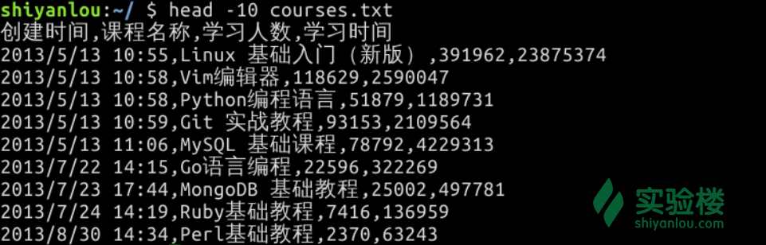
预览数据集，能让我们对数据结构，包含的大致内容有快速了解。这里，通过预览courses.txt，我们可以得到以下几条结论：
4 列，且已经包含列名。1 列为时间序列。2 列为字符串类型。3，4 列为数值类型。总之，我们可以发现该数据集并不是特别复杂。
了解数据集的类型之后，我们就可以开始读取数据，并对数据进行简单处理。当然，这里肯定会用到的就是 Pandas 数据处理开源工具了。
我们依旧通过实验楼线上提供的ipython终端来执行代码，线下练习推荐使用 Jupyter Notebook。
$ anaconda3/bin/ipython
进入 ipython 后，开始导入数据文件：
In [1]: import pandas as pd
# 导入文本文件，使用逗号分割
In [2]: courses_ori = pd.read_table('courses.txt', sep=',', header=0)
# 预览 DataFrame 前 5 行
In [3]: courses_ori.head()
Out[3]:
创建时间 课程名称 学习人数 学习时间
0 2013/5/13 10:55 Linux 基础入门（新版） 391962 23875374
1 2013/5/13 10:58 Vim编辑器 118629 2590047
2 2013/5/13 10:58 Python编程语言 51879 1189731
3 2013/5/13 10:59 Git 实战教程 93153 2109564
4 2013/5/13 11:06 MySQL 基础课程 78792 4229313
既然数据集中包含有时间，那么我们就可以做一个简单的时间序列分析，看一看课程学习人数和学习时间的随着时间的变化情况。
第一步当然是将时间数据变为 DatetimeIndex 格式，这样时间就可以作为索引了。
In [4]: i = pd.to_datetime(courses_ori['创建时间'])
In [5]: i.head()
Out[5]:
0 2013-05-13 10:55:00
1 2013-05-13 10:58:00
2 2013-05-13 10:58:00
3 2013-05-13 10:59:00
4 2013-05-13 11:06:00
Name: 创建时间, dtype: datetime64[ns]
然后，我们对原始数据courses_ori进行修改。
In [9]: courses_ts = pd.DataFrame(data=courses_ori.values, columns=courses_ori.columns, index=i)
In [10]: courses_ts.head()
Out[10]:
创建时间 课程名称 学习人数 学习时间
创建时间
2013-05-13 10:55:00 2013/5/13 10:55 Linux 基础入门（新版） 391962 23875374
2013-05-13 10:58:00 2013/5/13 10:58 Vim编辑器 118629 2590047
2013-05-13 10:58:00 2013/5/13 10:58 Python编程语言 51879 1189731
2013-05-13 10:59:00 2013/5/13 10:59 Git 实战教程 93153 2109564
2013-05-13 11:06:00 2013/5/13 11:06 MySQL 基础课程 78792 4229313
此时，我们成功将原创建时间修改为了 courses_ts 的时间戳索引。但是，原来的 创建时间 列依旧存在，需要将其去除。
In [11]: courses_ts = courses_ts.drop("创建时间", axis=1)
In [12]: courses_ts.head()
Out[12]:
课程名称 学习人数 学习时间
创建时间
2013-05-13 10:55:00 Linux 基础入门（新版） 391962 23875374
2013-05-13 10:58:00 Vim编辑器 118629 2590047
2013-05-13 10:58:00 Python编程语言 51879 1189731
2013-05-13 10:59:00 Git 实战教程 93153 2109564
2013-05-13 11:06:00 MySQL 基础课程 78792 4229313
接下来，我们先看一看学习人数和学习时间随着时间变化的趋势。为了更方便绘图，我们可以进一步减少数据量，这里可以用 Pandas 对时间序列降采样。
这里，我们按照周次频率进行降采样。
# 按照周次频率进行降采样
In [13]: courses_ts_W = courses_ts.resample('W').sum()
然后，我们使用 Matplotlib 对学习人数和学习时间随着时间变化的趋势进行绘图。
这里拿累计学习时间举例，尝试绘制折线图
In [14]: import matplotlib.pyplot as plt
In [15]: plt.plot_date(courses_ts_W.index, courses_ts_W['学习时间'], '-')
In [16]: plt.xlabel('Time Series')
In [17]: plt.ylabel("Study Time")
In [18]: plt.show()
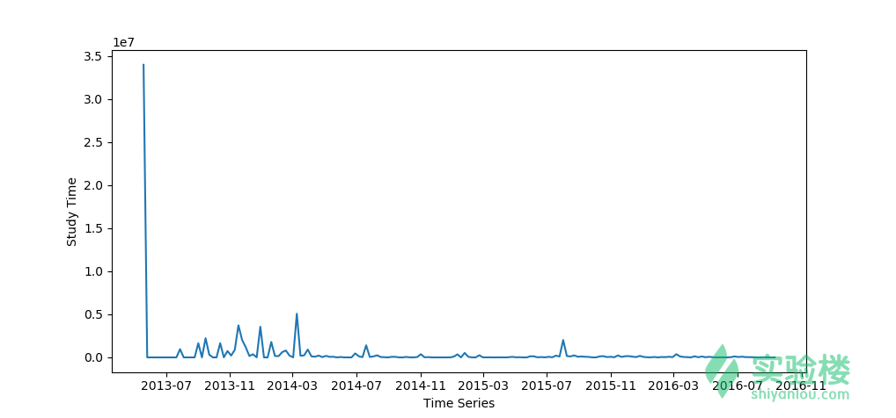
采用常用的plt.plot()或者 plt.plot_date() 绘制出的这张图看起来很糟糕，它似乎并不能很好地传达出实验课程累计学习时间的变化趋势。
这里，我们学习引入另一个绘图库 Seaborn，它是整合了 Matplotlib 核心方法的高级绘图库，
我们使用Seaborn 提供的 regplot 方法，它可以在绘制散点图时，对数据自动进行回归拟合。我们一起来看一下：
# 使用 Seaborn 时，须同时引入 Matplotlib
In [19]: import matplotlib.pyplot as plt
In [20]: import seaborn as sns
# 新添加一个序数列，方便绘制散点图
In [21]: courses_ts_W['id'] = range(0,len(courses_ts_W.index.values))
In [22]: sns.regplot("id", "学习时间", data=courses_ts_W, scatter_kws={"s": 10}, order=8, ci=None, truncate=True)
In [23]: plt.xlabel('Time Series')
In [24]: plt.ylabel("Study Time")
In [25]: plt.show()
看起来比上面直接绘制折线图要好很多。但是，这条显示趋势的拟合线似乎依旧有一些问题。
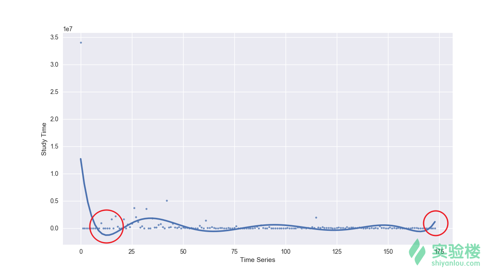
一开始数据向下凹的厉害，以及最后的翘尾。重新查看数据，我们可以发现曲线下凹部分是由于实验楼在 2013 年的第二、第三季度新增课程较少。而尾部的上翘，应归结于拟合偏差，你可以通过减小 order=参数的数值，来降低这种偏差。
当然，我们还可以通过设置 x_bins= 参数，绘制出能更加直观反映上升或下降趋势的图像。
In [26]: sns.regplot("id", "学习人数", data=courses_ts_W, x_bins=10)
In [27]: plt.xlabel('Time Series')
In [28]: plt.ylabel("Study Time")
In [29]: plt.show()
我们进一步降低了采样点，并得到了置信区间。这就能很清晰地反映出，课程累计实验时长随着时间推移在逐渐减少。
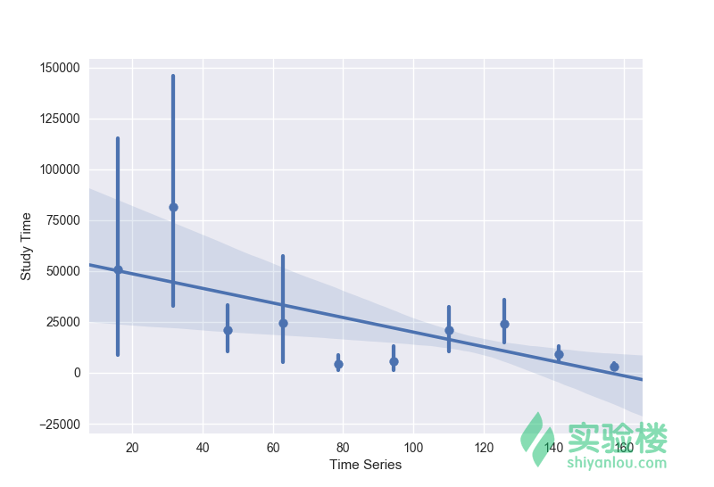
你可能会纳闷，课程累计实验时长为什么会逐渐减少？原因当然很简单，新课程出来之后，一开始学习的人数较少，累计学习的时间也比较少。而老课程时间的增加，尤其是很多年前的课程累计实验时间数值非常高。这也反映了，实验楼的课程质量经得住时间考验。
既然我们有每门课程的总学习时间和学习人数，那么我们就能计算出每门课下，每个人的平均学习时间。
# 每次做单独分析时，最好复制一份整理好的数据，减少对原数据集影响
In [30]: courses_ts_A = courses_ts.copy()
# 计算平均学习时间并添加列
In [31]: courses_ts_A['平均学习时间'] = courses_ts_A['学习时间']/courses_ts_A['学习人数']
# 预览
In [32]: courses_ts_A.head()
Out[32]:
创建时间 课程名称 学习人数 学习时间 平均学习时间
2013-05-13 10:55:00 Linux 基础入门（新版） 391962 23875374 60.9125
2013-05-13 10:58:00 Vim编辑器 118629 2590047 21.8332
2013-05-13 10:58:00 Python编程语言 51879 1189731 22.9328
2013-05-13 10:59:00 Git 实战教程 93153 2109564 22.6462
2013-05-13 11:06:00 MySQL 基础课程 78792 4229313 53.6769
我们可以依据平均时间对数据集进行排序，然后预览前 5 条和后 5 条数据：
In [33]: courses_ts_A.sort_values(by='平均学习时间', ascending=False).head()
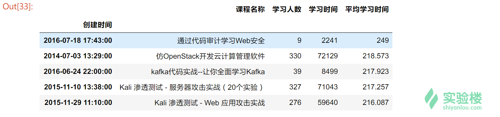
看以看出，平均学习时间较长的都是训练营课程，这也预料之中。因为训练营课程内容较多，所以平均学习时间自然较长。
查看后 5 条数据如下：
In [34]: courses_ts_A.sort_values(by='平均学习时间', ascending=False).tail()
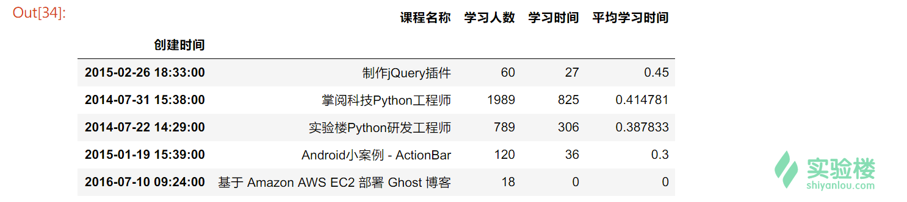
对于平均学习时间较短的这些数据。我们可以发现这些课程的共同特点，那就是可能没有添加在线实验环境，或者是在本地书写代码，在线提交结果的任务型课程。
如果我们进一步分析课程的异常情况，可以查看一些学习人数偏多，但平均时间明显偏少的课程。这里，需要计算学习平均学习时间与人数的比值：
# 添加新列
In [35]: courses_ts_A['平均学习时间/人数'] = courses_ts_A['平均学习时间']/courses_ts_A['学习人数']
# 按照比值从小到大排序并显示前 10 条
In [36]: courses_ts_A.sort_values(by='平均学习时间/人数').head(10)
下图显示的是学习平均学习时间与人数比值最为悬殊的前 10 条数据。
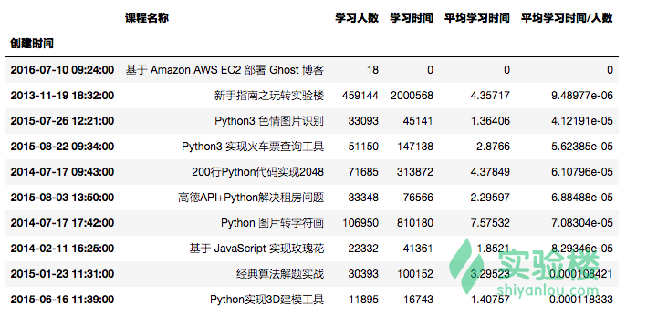
排除第一条异常数据，以及第二条不需要太多操作的课程，我们可以发现剩下的课程大多都提供了线上环境。这些课程学习人数众多，但是平均学习时间少的可怜。对于这样的现状大致存在三种原因：
实验楼后续可能会针对这些选题有趣的实验进行优化，避免大家只是玩玩而并未真正地去手动实现。
另外，通过绘制出平均学习时间和学习人数的关系图，我们可以更直观地看出需要重点关注的课程。
In [37]: sns.jointplot("平均学习时间", "学习人数", kind='scatter', data=courses_ts_A)
In [23]: plt.xlabel('Average Study Time')
In [24]: plt.ylabel("Number of Users")
In [38]: plt.show()
对于靠近坐标轴的数据，都是我们需要重点关注的课程。
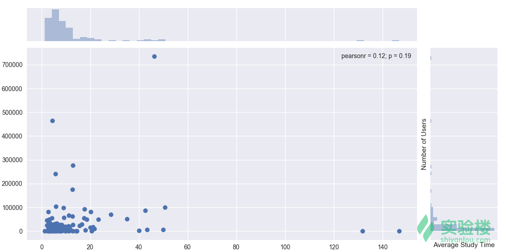
虽然数据集提供的可用信息较少，但是我们仍然有可以挖掘的空间。比如，我们想知道实验楼的那一类课程最受用户喜欢。这时候，就可以用到聚类分析，找出用户最喜欢课程类型。
一般情况下，课程名称中就包含有实验的关键词。例如本课程叫 《Python 数据分析入门与进价》，我们就知道这门课程与 Python 和数据分析有关。而这些关键词就可以作为聚类的特征。
找出这些关键词，就需要对课程名称进行分词处理。从中文语言的特点来看，一句话往往有单子、词语、标点符号组成。而分词，就是从一句话中提取这些元素的过程，这也是自然语言处理中的重要一步。
目前，在中文分词方面，比较好的开源工具有 jieba，Yaha，Genius 等。这里，我们使用 jieba 分词来针对课程名称进行处理。
首先，需要在实验楼的在线环境中安装jieba分词模块，注意这里要安装到 anaconda 下方：
$ sudo anaconda3/bin/pip install jieba
然后开始对课程名称进行分词处理：
# 导入 jieba 分词模块
In [39]: from jieba import analyse
In [40]: a = []
In [41]: for i in courses_ts_A['课程名称']:
# 使用 jieba 分词并使用 TF-IDF 算法抽取两个关键词，仅返回英文、名词、动词、动名词
a.append(analyse.extract_tags(i, topK=2, withWeight=False, allowPOS=('eng','n','vn','v')))
In [42]: keywords = pd.DataFrame(a,columns=['关键词1','关键词2'])
In [43]: keywords.head()
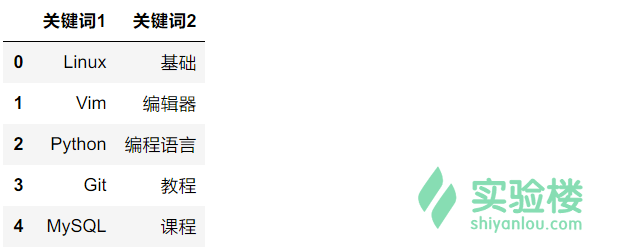
然后，我们将关键词列合并到原数据集中。这里，仍需要使用 copy() 方法拷贝一份数据集，以减少对原数据集的影响。
# 复制一份数据集用于聚类
In [44]: courses_ts_C = courses_ts_A.copy()
# 重置索引方便数据集拼接
In [45]: courses_ts_C = courses_ts_C.reset_index()
# 将复制数据集与关键词数据集拼接，并删掉时间列
In [46]: courses_ts_merged = pd.concat([courses_ts_C, keywords], axis=1).drop("创建时间", axis=1)
# 预览合并后数据集
In [47]: courses_ts_merged.head()
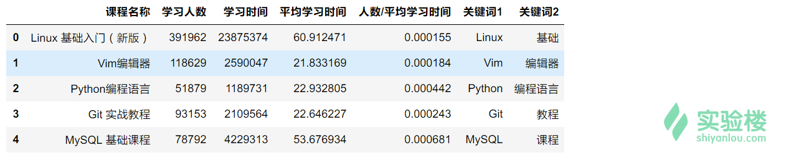
为了方便聚类，我们这里针对关键词进行独热编码处理：
# 针对关键词进行独热编码处理
In [48]: oneHot = pd.get_dummies(courses_ts_merged[['关键词1','关键词2']])
# 预览
In [49]: oneHot.head()
由于分词产生的不相同词组太多，此处的独热编码返回了多达 527 列的特征。
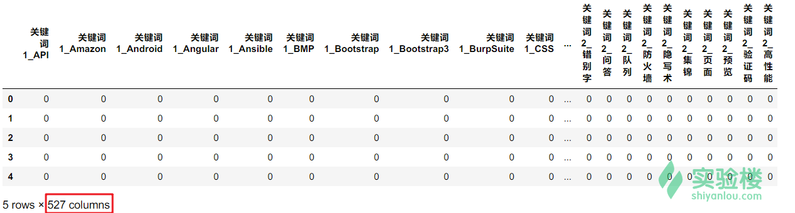
527 列的特征已经超过了数据集的 484 行。在这类小规模数据集上，非常不推荐使用过多的特征。所以，我们要针对特征进行降维，关于 PCA 降维，前面的课程也有学习过了。
# 引入 PCA 降维
In [50]: from sklearn.decomposition import PCA
# 将特征缩小至 5 维
In [51]: pca = PCA(n_components=5)
# 返回降维后的值
In [52]: feature_pca = pca.fit_transform(oneHot)
接下来，就可以应用降维了。这里使用最为常见的 K-Means 降维。在聚类的章节，我们学习过确定 K 值的方法。所以，这里需要先计算轮廓系数，然后确定 K 值。
In [53]: from sklearn.cluster import k_means
In [54]: from sklearn.metrics import silhouette_score
# 建立模型
In [55]: score = []
# 依次轮廓系数
In [56]: for i in range(10):
model = k_means(feature_pca, n_clusters=i + 2)
score.append(silhouette_score(feature_pca, model[1]))
# 轮廓系数绘图
In [57]: plt.plot(range(2, 12, 1), score)
In [58]: plt.show()
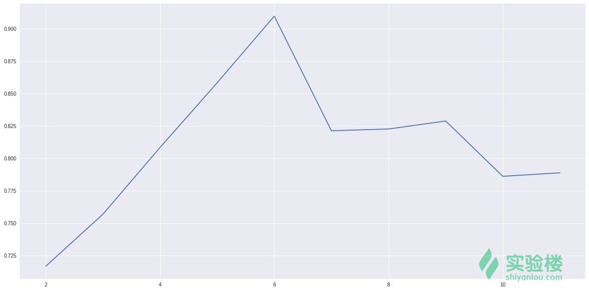
从轮廓系数反映的图像来看，我们可以定 K=6，即将课程聚为 6 类。
# 执行聚类
In [59]: model = k_means(feature_pca, n_clusters=6)
# 将类别列添加到数据集中
In [60]: courses_ts_final = pd.concat([courses_ts_merged, pd.Series(model[1],name='类别')], axis=1)
# 依照类别排序并预览数据
In [61]: courses_ts_final.sort_values(by='类别', ascending=False)
可以看到，聚类效果还能接受。红框类都是和 Linux 相关的课程。
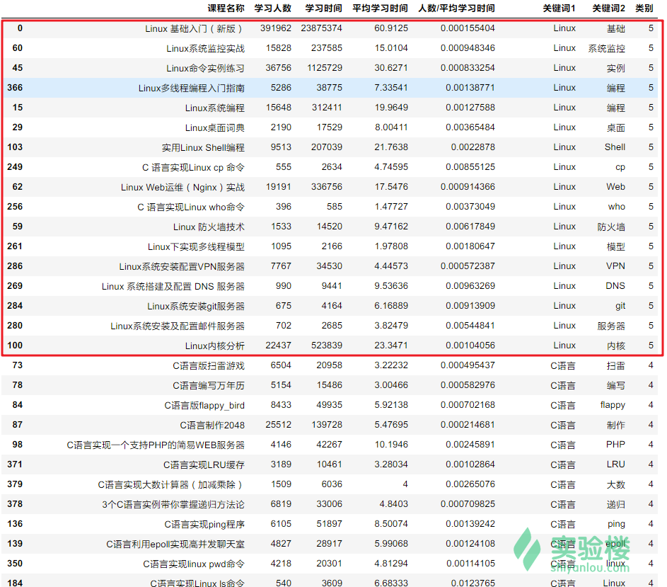
但是，如果你浏览到类别 0，你就会发现非常杂乱的现象。具体原因大致有两点：
本次实验，我们通过对实验楼课程数据集进行分析，简单的探索了课程之间的联系。通过实验，我们进一步熟悉前面课程提到的内容，包括数据预处理、时间序列、聚类等。希望这些内容对正在学习数据分析的你有所启发。